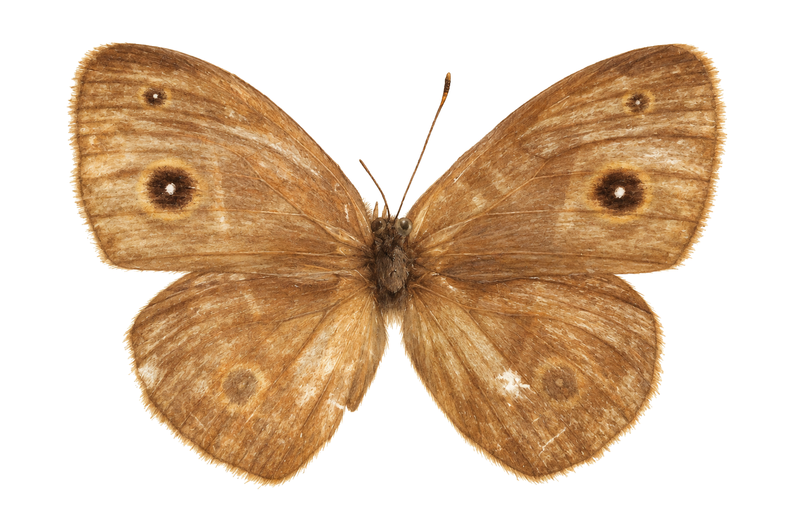

Nymphalidae · 139 / 165
Mycalesis madjicosa
Mycalesis madjicosa

বৈশিষ্ট্য ও শনাক্তকরণ
বাদামি ডানার নিচে ফ্যাকাশে ফিতা ও চোখের দাগের সারি থাকে। ঘাসের মধ্যে নিচু দিয়ে উড়ে।
স্ত্রী ও পুরুষের পার্থক্য
পর্যালোচিত সূত্রে নির্ভরযোগ্য বাহ্যিক স্ত্রী-পুরুষ পার্থক্য নিশ্চিত করা যায়নি।
আকার
সামনের এক ডানার দৈর্ঘ্য ২০–২৮ মিমি।
ওকিনাওয়ার দ্বীপে রেকর্ড
ওকিনাওয়া, কুমে, মিয়াকো, ইশিগাকি, ইরিওমোতে ও ইয়োনাগুনিসহ বিস্তৃত অঞ্চলে রেকর্ড আছে।
আবাসস্থল
তৃণভূমি, বনপ্রান্ত ও বনপথের ঘাসসমৃদ্ধ স্থান।
জীবনযাপন ও অতিরিক্ত তথ্য
একই গণের Mycalesis perseus-এর মতো আগন্তুকও আছে; শুধু একটি চোখের দাগ দেখে সিদ্ধান্ত নেবেন না।
শূককীট ও খাদ্য উদ্ভিদ
Miscanthus, Imperata, Coix, Lophatherum ও রিউকিউ বাঁশসহ নানা ঘাস খাদ্য।
তথ্যসূত্র ও সহায়ক পাঠ
- 沖縄蝶類生態図鑑：リュウキュウヒメジャノメ
ডেটায় উল্লেখিত সূত্র দেখার তারিখ: 2026-11-10 - WEB生物図鑑：リュウキュウヒメジャノメ
ডেটায় উল্লেখিত সূত্র দেখার তারিখ: 2026-11-10
তথ্য সরবরাহকৃত ডেটার উপর ভিত্তি করে তৈরি (হালনাগাদ: ১০ নভেম্বর ২০২৬)। কোনো দ্বীপের রেকর্ড সেখানে বর্তমান স্থায়ী বসবাস বা সহজে দেখা পাওয়ার নিশ্চয়তা নয়। চিত্র নির্দেশক; শনাক্তকরণে বাস্তব নমুনা ও সূত্র মিলিয়ে দেখুন।